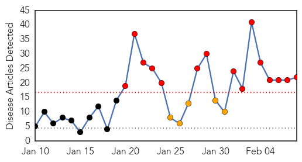

Swine Flu
30-Day Web Trend
15 alerts, 5 warnings

30-Day Twitter Trend
0 alerts, 0 warnings

Article Locations
Article Confidences
Top Articles:
- 1.000
- 'People need not panic'
- 1.000
- Maintain personal hygiene, keep surroundings clean: Experts
- 1.000
- Swine flu scare in the air, state health dept on high alert
- 0.999
- Swelling number of swine flu cases puts government on high alert : India, News
- 0.998
- Six more die of flu, 124 test positive
- 0.998
- 61 new H1N1 cases in Ahmedabad
- 0.997
- Woman from Kangra confirmed swine flu case
- 0.996
- Swine flu kills 5 more; health dept maintains 'don't panic'
- 0.995
- Swine flu kills 5 more, health dept asks people not to panic
- 0.995
- Swine flu: Two more deaths take toll to 11; minister says combat efforts on
- 0.995
- Krishna to visit city hospitals tomorrow
- 0.993
- 5 more die of H1N1 in state
- 0.992
- Swine flu claims six lives in Karnataka
- 0.991
- Woman from Kangra confirmed swine flu case
- 0.989
- Swine flu claims six lives in Karnataka
- 0.988
- 2 suspected to have contracted H1N1 in Mysuru
- 0.982
- Distribute swine flu medicines in villages, doctors told
- 0.974
- Swine Flu Cases Surge to 40 in Lucknow
- 0.962
- Panic In Nellore Over Swine Flu
- 0.932
- Suspected H1N1 case reported in Sirguppa taluk in Ballari
- 0.893
- Swine flu: exclusive ward opened at Salem hospital
- 0.514
- Baghdad Lifts Its Decade-Old Curfew, Partying Ensues
Top Tweets:
-
No tweets found for Feb 08, 2015
Dengue Fever
30-Day Web Trend
2 alerts, 0 warnings
30-Day Twitter Trend
3 alerts, 0 warnings
Article Locations
Article Confidences

Top Articles:
Top Tweets:
-
No tweets found for Feb 08, 2015